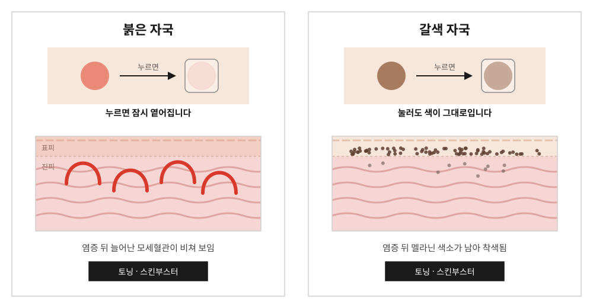
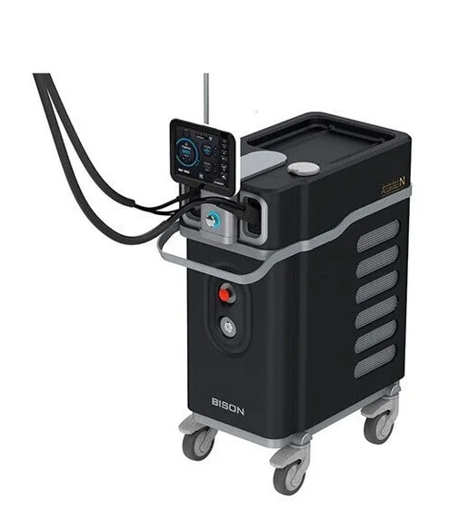
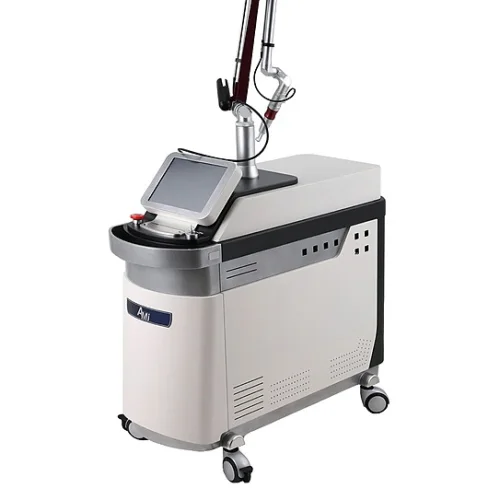
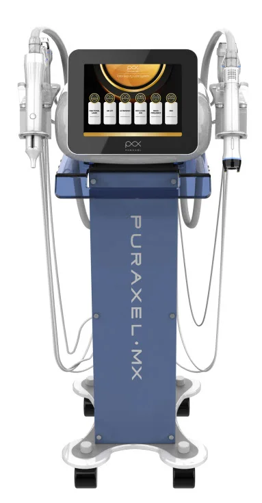

붉은 자국에
혈관 토닝
혈관에 반응하는 설정으로, 염증 뒤 늘어나 붉게 비치는 모세혈관에 작용해 붉은 기를 가라앉힙니다.
사용 장비 · 악센토N · 큐마스터플러스
홈 > 피부미용 > 여드름 > 여드름 붉은자국
자국의 색에 맞춰, 토닝과 스킨부스터
ACNE MARK
여드름 자국은 피부가 패인 흉터와 달리 표면은 평평하고 색만 남아 있는 상태입니다. 염증이 지나간 자리에 늘어난 모세혈관이 비쳐 붉게 보이거나, 멜라닌 색소가 남아 갈색으로 보입니다.
시간이 지나며 옅어지기도 하지만 오래 걸리고, 그 사이 자외선과 자극으로 더 짙어질 수 있습니다. 갈창림한의원은 야누스프로로 홍조와 색소침착을 확인한 뒤 토닝과 스킨부스터로 관리합니다.
자국의 색이 다르면 치료도 달라야 합니다.

COLOR
| 구분 | 붉은 자국 | 갈색 자국 |
|---|---|---|
| 원인 | 염증 뒤 늘어난 모세혈관 | 염증 뒤 남은 멜라닌 색소 |
| 눌러 보면 | 잠시 옅어짐 | 색이 그대로 |
| 잘 생기는 경우 | 피부가 얇고 붉은 기가 잘 도는 경우 | 자외선 노출이 많거나 피부톤이 어두운 경우 |
| 주로 쓰는 치료 | 혈관에 반응하는 토닝 + 스킨부스터 | 색소에 반응하는 토닝 + 스킨부스터 |
TONING
낮은 세기의 레이저를 얼굴 전체에 고르게 조사해, 자극은 줄이면서 자국을 조금씩 옅게 합니다. 붉은 자국과 갈색 자국 모두 악센토N과 큐마스터플러스를 자국 상태에 맞춰 함께 사용합니다.
붉은 자국에
혈관에 반응하는 설정으로, 염증 뒤 늘어나 붉게 비치는 모세혈관에 작용해 붉은 기를 가라앉힙니다.
사용 장비 · 악센토N · 큐마스터플러스
갈색 자국에
멜라닌에 반응하는 1064nm를 낮은 세기로 여러 번 나누어 조사해, 남아 있는 색소를 조금씩 옅게 합니다.
색소 치료 보기 →사용 장비 · 악센토N · 큐마스터플러스
※ 붉은 기와 색소가 섞인 자국은 두 토닝을 함께 진행하며, 자국 상태에 따라 장비 조합과 설정이 달라집니다.
SKIN BOOSTER
염증을 겪은 피부는 장벽이 약해지고 회복이 더딥니다. 피부 상태에 맞는 스킨부스터를 어븀야그 레이저와 LDM을 이용하거나 손주사로 고르게 주입해, 토닝과 함께 회복을 돕습니다.
EQUIPMENT

755nm · 1064nm
두 가지 파장을 갖춘 레이저입니다. 큐마스터플러스와 함께 붉은 자국과 갈색 자국 토닝에 사용합니다.

532nm · 1064nm
큐스위치 Nd:YAG 레이저입니다. 악센토N과 함께 붉은 자국과 갈색 자국 토닝에 사용합니다.

스킨부스터 주입
어븀야그 레이저로 미세한 통로를 만들어 스킨부스터가 피부에 고르게 스며들도록 돕습니다.
PROCESS
CAUTION
※ 필요한 시술 횟수와 효과는 자국의 색과 깊이, 피부 상태에 따라 개인차가 있습니다.
FAQ
시간이 지나며 옅어지기도 하지만 수개월 이상 걸리는 경우가 많고, 그 사이 자외선과 자극으로 갈색으로 착색될 수 있습니다. 오래 남아 있다면 관리를 함께하는 것이 좋습니다.
자국은 피부 표면이 평평하고 색만 남은 상태이고, 흉터는 진피가 손상되어 피부가 패이거나 솟은 상태입니다. 패인 흉터는 여드름 흉터 페이지에서 확인하실 수 있습니다.
자국의 색과 깊이, 생긴 지 얼마나 되었는지에 따라 다르며, 보통 2주 간격으로 여러 번 받으면서 경과를 확인합니다.
가능합니다. 다만 염증이 심한 여드름은 여드름 치료로 먼저 가라앉히거나 함께 진행합니다.
작성·검토갈창림 대표원장 (한의사)최종 검토 2026년 10월